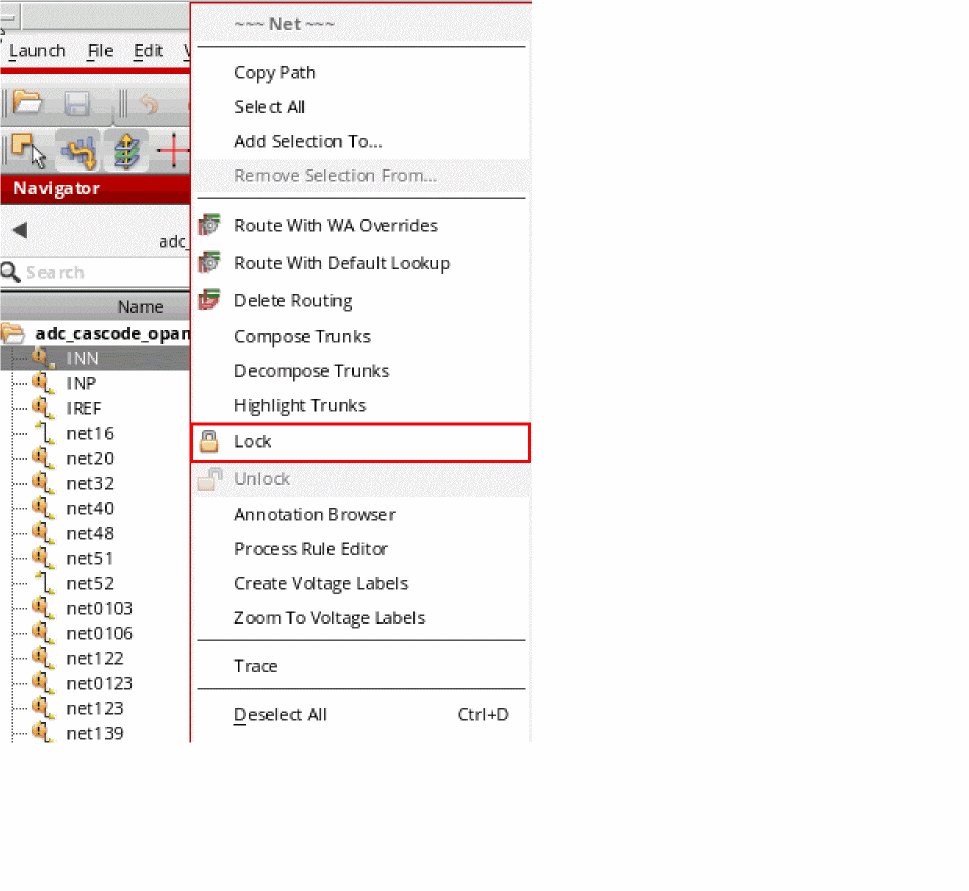
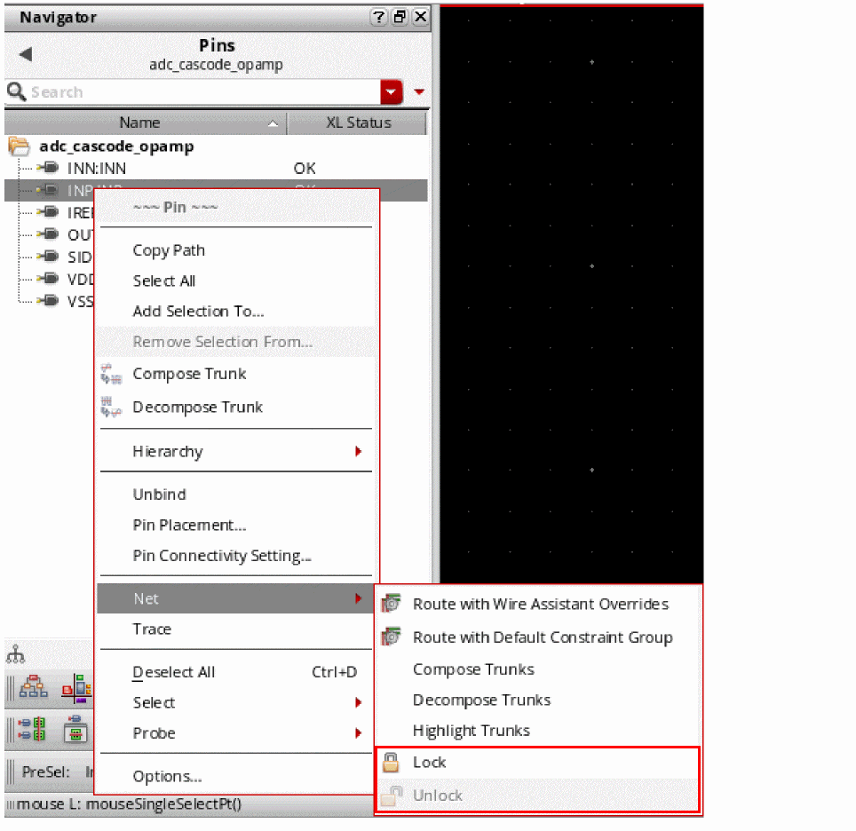
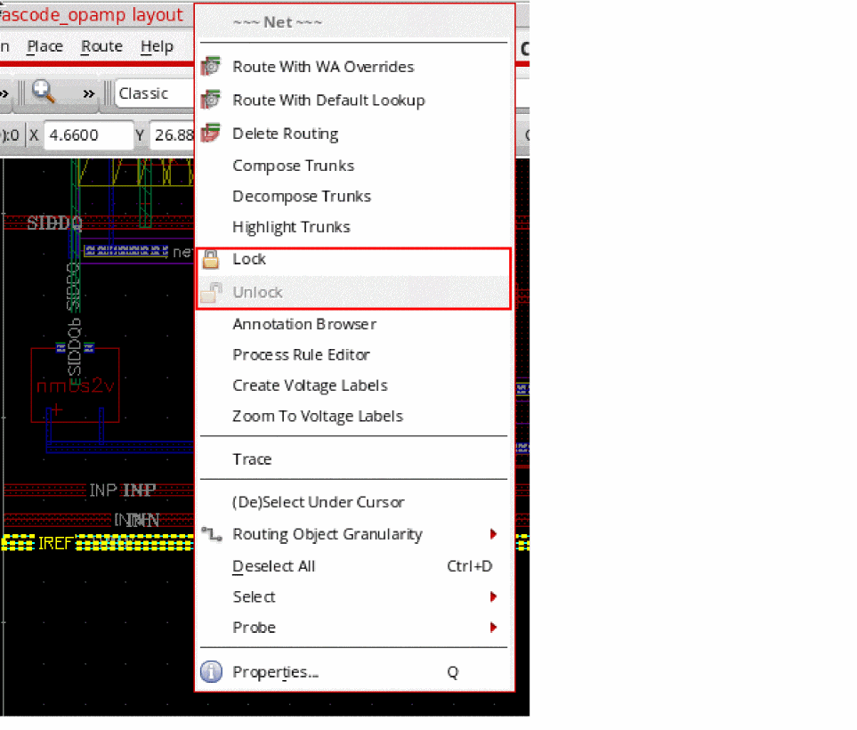
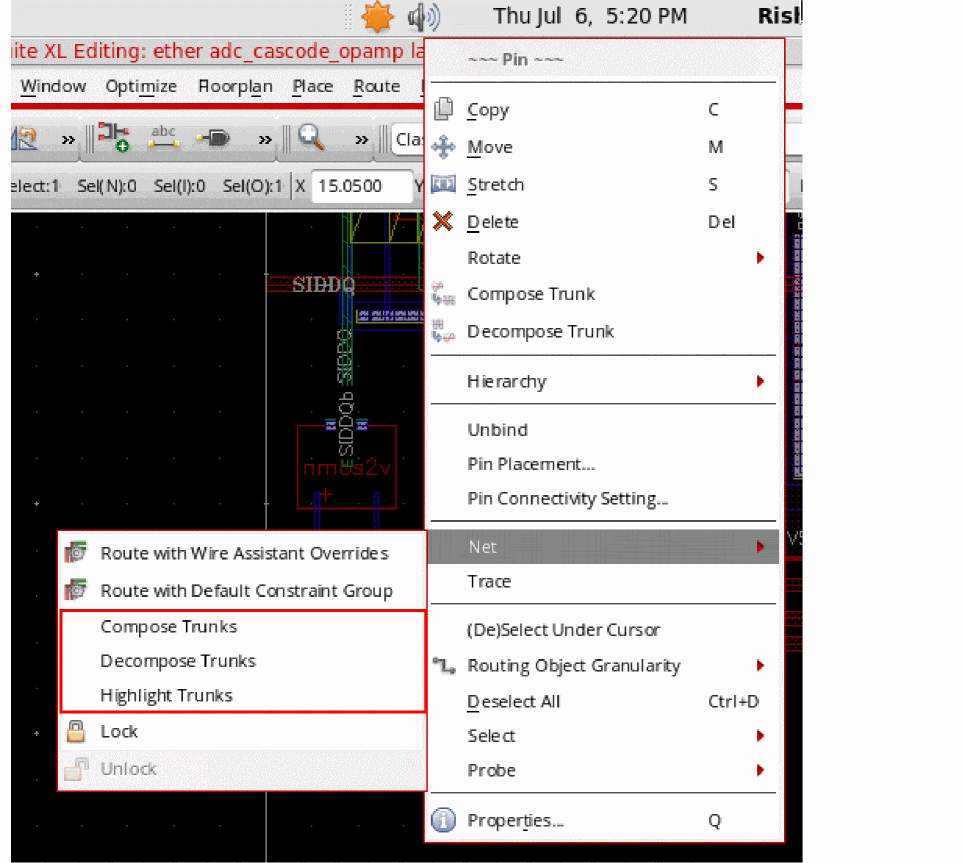

Locking and Unlocking Nets to Set Routing Status
You can lock and unlock nets to set the routing status on paths, pathSegs, and vias. In other words, by locking a net, you can implement a constraint on its position in the design. For more information on the Locked constraint, see
To lock or unlock a net, you can use the appropriate shortcut command from the Navigator assistant or the canvas.
Locking and Unlocking a Net from the Navigator Assistant
To lock a net by using the Lock command in the Navigator assistant shortcut menu:
-
Right-click a net or pin in the Navigator assistant.
You can select multiple nets (or pins) to simultaneously lock (or unlock) them.
If you selected a net, the Lock (or Unlock) commands are displayed in the Navigator assistant shortcut menu.
If you selected a pin, the Lock and Unlock commands appear under the Net sub menu.
 -
To lock the net, select the Lock command.
This locks the position of the selected net on the canvas, making it impossible to move the net to a new position unless the net is unlocked.
The route lock status of a net can be viewed using the Route Status column, as shown in the figure below. The Route Status column is off by default.
Do not confuse the Navigator Lock Status column as the one displaying the routing lock status set using the Lock/Unlock commands. The Lock Status column displays information about the user and the host currently editing the cellview. For the route lock status of a net, use the Route Status column.
To unlock a net or a pin, select the Unlock command. Unlocking makes the net (or pin) open for relocation along the canvas.
Locking and Unlocking a Net from the Canvas
To lock a net from the shortcut menu available on the Canvas:
-
Right-click a net, shape, or a pin on the canvas.
The shortcut menu is displayed.
If you selected a pin, the Lock and Unlock commands appear under the Net submenu.
 -
To lock the net, select the Lock command.
This locks the position of the selected net on the canvas, making it impossible to move the net to a new position unless the net is unlocked.
The route lock status of a net can be viewed using the Route Status column, as shown in the figure below. The Route Status column is off by default.
Do not confuse the Navigator Lock Status column as the one displaying the routing lock status set using the Lock/Unlock commands. The Lock Status column displays information about the user and the host currently editing the cellview. For the route lock status of a net, use the Route Status column.
To unlock a net, select the Unlock command from the shortcut menu. Unlocking makes the net open for relocation along the canvas.
Related Topics
Return to top